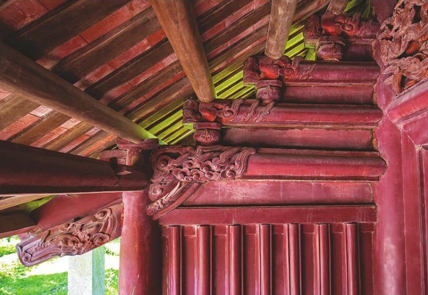
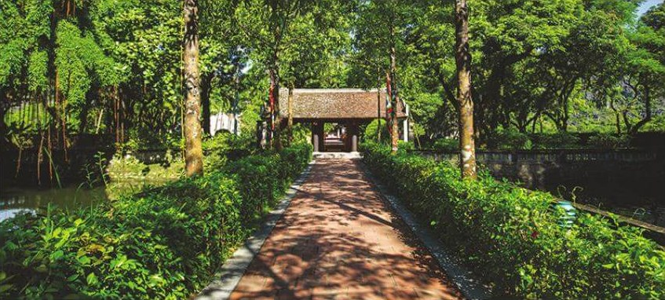

CỐ ĐÔ HOA LƯ
丁王廟の外儀門と内儀門

信仰建築の伝統的な構造において、儀門は単なる出入り口ではなく、外部の空間と神聖な祭祀の空間を区別する意味を持っています。昔の考えでは、敷居の高い儀門を通り抜ける際、観光客は頭を下げて厳かで敬虔な態度を保つ必要があります。これも、日常の生活空間から、民族の文化的価値を保存する神聖な文化空間への移行と見なされています。
外儀門と内儀門という、似たような建築様式の2つの門があります。2つの儀門は3つの部屋を持つ家の形で作られ、「3列の柱」の構造を持っています。この建築は、現在まで保存されているベトナムで最も初期の「3列の柱」の建築構造であることが確認されています。年代は17世紀です。梁と柱のシステムはしっかりと連結されています。ここでの装飾テーマは非常に多様で、龍のイメージが主流です。高浮き彫りと透かし彫りの技術により、ここの龍は体がふっくらとしており、刃の形をした炎の文様を持っています。それらは、巣にいる龍、群れをなす龍の形で彫刻されており、永遠の生命の誕生と繁栄を祈る願いが込められています。

内儀門では、神聖な龍のイメージの隣で、民間職人たちは木材の一片一片に、人間の生活の素朴でありながら奥深い美しさを託しました。それは、自然を征服する力と人間の向上への渇望を伝える、力強く獣と戦う人々の活動的な場面であり、あるいは静かに休んでいる獣の姿であり、平和で静かなベトナムの農村風景を思い出させます。特に、人間のイメージは、龍に乗る天女の踊り子を描くことによって昇華されており、しなやかな体つきと柔らかい踊りの姿勢は、威厳がありながらも親しみやすいものです。

全体として、これらの彫刻は日常生活から出発したものの、最高の彫刻価値を持ち、多くの象徴的な意味を含んでいます。神聖な場所の厳粛さと生活の身近な息吹の絶妙な結合は、新しい生命の息吹を吹き込み、独自の建築空間を創造し、丁先皇廟の静かで霊気に満ちた美しさをもたらしています。